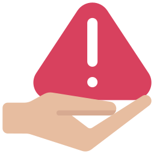

¿Qué es MoodMate?
1MoodMate es tu compañero digital
MoodMate es una plataforma con herramientas fáciles de usar, te ayuda a registrar y entender tus emociones, identificar patrones y conectar pensamientos, sentimientos y comportamientos.
2Confidencial y seguro
Como tu compañero emocional, MoodMate garantiza la protección de tu privacidad y la seguridad de tu información personal, para que puedas enfocarte en tu bienestar con total tranquilidad.
¿Qué hace tan especial a MoodMate?
1Amplia gama de recursos
MoodMate te ofrece acceso directo a terapeutas, grupos de apoyo, líneas directas y más recursos de salud mental. Descubre una forma más consciente de vivir y cuidar tu bienestar con MoodMate.
2Accesible y fácil de usar
Disponible en tu dispositivo móvil y en la web, MoodMate te ofrece acceso a tu bienestar emocional en cualquier momento y lugar. Monitorea tus emociones, identifica patrones y conecta con apoyo profesional, todo desde la palma de tu mano o tu computadora. Con MoodMate, tu bienestar siempre está al alcance.
3Enfoque en la prevención
En MoodMate, te ayudamos a adoptar hábitos saludables y a detectar problemas de salud mental a tiempo. Con nuestras herramientas intuitivas, puedes monitorear tus emociones y patrones, permitiéndote tomar el control de tu bienestar emocional.
4Planes de bienestar personalizados
MoodMate crea planes basados en las respuestas y objetivos del usuario, incluyendo actividades como mindfulness, meditación y establecimiento de metas.
Descripción de las funciones
Escritura de notas
No solo es un diario, sino un espacio interactivo donde cada nota cobra vida.
Cuando escribes una nota, puedes elegir entre las emociones principales: desde alegria hasta tristeza. Cada emoción se refleja en la interfaz con colores y graficos agradables que capturan tu estado de ánimo. Así, cada entrada no solo guarda tus pensamientos, sino que también te ayuda a reconocer y explorar tus emociones.

Graficas Emocionales
¡Convierte tus sentimientos en visualizaciones poderosas y significativas!
Cada vez que registras una nota y seleccionas la emoción correspondiente, la app analiza estos datos y crea gráficos visuales que representan tus estados emocionales a lo largo del tiempo.
Con esta función, puedes ver de un vistazo cómo han fluctuado tus emociones, identificar posibles desencadenantes y comprender mejor tu bienestar emocional.
Metas personales
¡Una herramienta simple pero poderosa para alcanzar tus metas!
Con esta función, puedes organizar tus metas de manera clara y directa. Cada día, anota tus objetivos diarios y, en otra sección, detalla tus metas a largo plazo. La app también incluye un contenedor especial para registrar los objetivos cumplidos, permitiéndote ver tus logros y motivarte a seguir adelante.
Respuestas con IA
¡Listo para ofrecerte el consejo que necesitas!
Cada vez que registres una nota, puedes optar por activar esta función. La inteligencia artificial analizará el contenido de tu nota y la emoción seleccionada, y te proporcionará una respuesta adaptada a tus necesidades. Puede ofrecerte palabras de aliento, sugerencias para manejar tus emociones, ejercicios de relajación, o incluso técnicas de mindfulness y meditación específicas para tu estado emocional.